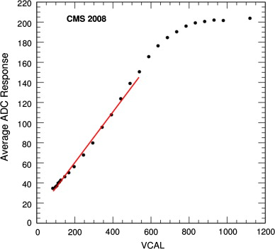
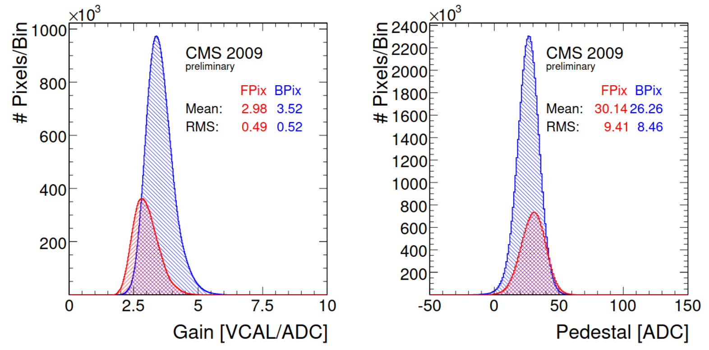
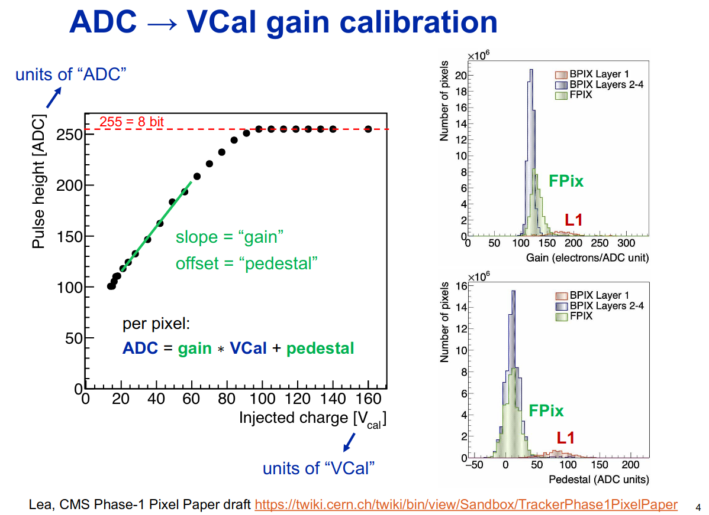
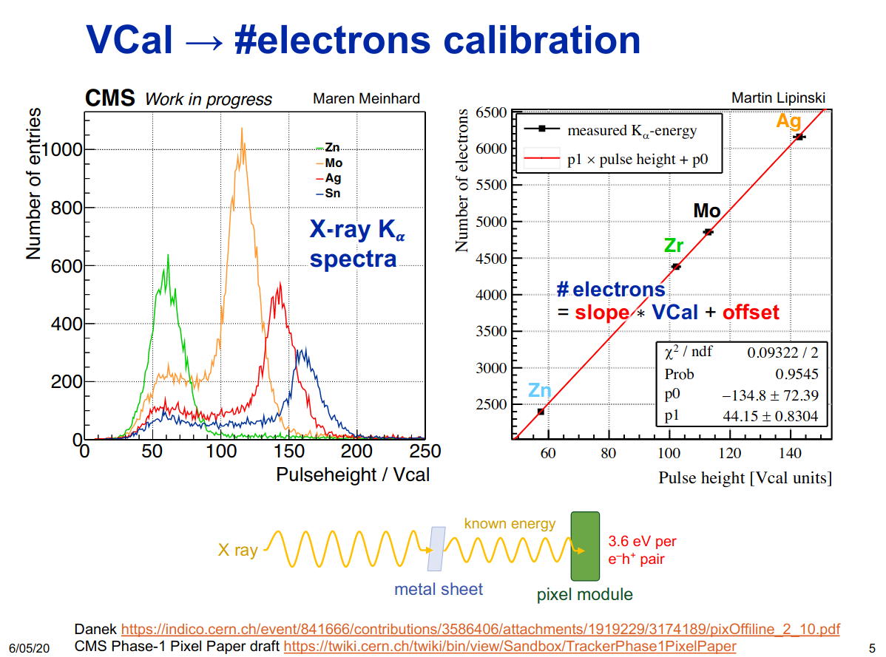

gpuCalibPixel.h - calibPixels
The whole kernel:
1 2 3 4 5 6 7 8 9 10 11 12 13 14 15 16 17 18 19 20 21 22 23 24 25 26 27 28 29 30 31 32 33 34 35 36 37 38 39 40 41 42 43 44 45 46 47 | |
1. Init
This part of the code has nothing to do with calibrating pixels. We're initialising clusModuleStart and moduleStart as well as nClustersInModule. Even if we have effectively zero digis in this event we still need to call this kernel for these initialisations to happen.
14 15 16 17 18 19 | |
2. ADC to VCAL
Converting from ADC to VCAL:
29 30 31 | |
...
38 | |
Note that to determine the gain and pedestal values the inverse of them is measured. This is done by injecting different VCAL values to the detector and measuring the ADC response.
From Offline calibrations and performance of the CMS pixel detector [#1]
In the second step of the ADC-to-charge calibration, a polynomial of first degree is fit to the ADC vs charge measurements. The fit is performed in a restricted VCAL range to minimize the influence of the non-linearities at high charge. The resulting two parameters (gain and pedestal) are displayed in Fig. 2 as obtained in a calibration run from October 2009. The gain is the inverse slope and the pedestal is the offset in Fig. 1. The parameters are very stable and are determined about every four months for control purposes.


Some more recent slides from https://indico.cern.ch/event/914013/#10-gain-calibration-for-run3-p:

3. VCAL to electrons (charge)
VCAL to charge conversion (up to Run2) | |
|---|---|
39 40 41 42 43 | |
From Offline calibrations and performance of the CMS pixel detector [#1]
The ADC-to-charge calibration proceeds in two steps. First, in a dedicated standalone calibration run (3–6 hour duration, depending on the setup) of the pixel detector, all pixels are subject to charge injection from around 4000 electrons into the saturation regime (> 50000 electrons). ... The charge injection is controlled by a digital-to-analog-converter called VCAL. The relation between VCAL and injected charge Q in electrons, Q = 65.5×VCAL−414, has been obtained from dedicated x-ray source calibrations with variable x-ray energies (17.44 keV from Mo, 22.10 keV from Ag, and 32.06 keV from Ba, excited from a primary Am source).
To us, the linear relationship is relevant here Q = 65.5×VCAL−414.

Note the difference between Run2 and afterwards
Gain calibration has changed from Run3, for more information read the following resources:
PRs:
Add SiPixelVCal DB object for pixel gain calibration #29829
Presentations:
From this presentation:
For the phase1 pixels the MC gain constants used to be:
gains = 3.17 (0.055)
pedestal = 16.3 (5.4)
same for bpix & fpix.
After the inclusion of the vcal calibration they become:
gains = 149(2.6) for L1 158.6(2.8)
pedestal = 16.7 (5.4) for L1 20.5(5.4)
from Configuration.Eras.Modifier_run3_common_cff import run3_common
run3_common.toModify(siPixelClusters,
VCaltoElectronGain = 1, # all gains=1, pedestals=0
VCaltoElectronGain_L1 = 1, #
VCaltoElectronOffset = 0, #
VCaltoElectronOffset_L1 = 0 #
)
Practically speaking, we're combining the two linear models, ADC to VCAL and VCAL to #electrons into 1 linear model. So afterwards, our VCAL to electron conversion is only defined for backwards compatibility, it is not used/executed, it doesn't do anything. (slope=1, offset=0)
4. min electron cut
minumum electron value becomes 100 | |
|---|---|
44 | |
This is also present in the legacy code.
5. Conclusion
From the high level overview, we calculate the charge (#electrons) for some pixel hit.
We receive an ADC value at a specific x, y coordinate in a specific module id[i], perform the gain calibration ADC->VCAL and VCAL->electrons (or ADC->electrons).
Output #electrons in adc array
We store the output, #electrons in the same storage that we had for input ADCs, the adc array.
Citations
[#1] Urs Langenegger, Offline calibrations and performance of the CMS pixel detector, Nuclear Instruments and Methods in Physics Research Section A: Accelerators, Spectrometers, Detectors and Associated Equipment, Volume 650, Issue 1, 2011, Pages 25-29, ISSN 0168-9002, https://doi.org/10.1016/j.nima.2010.11.188. (https://www.sciencedirect.com/science/article/pii/S0168900210027385) Abstract: The CMS pixel detector, divided into barrel and endcap subdetectors, has 66 million pixels. We present the offline algorithms and results for the gain/pedestal and Lorentz angle calibrations. The determination of the optimal clock delay settings with initial data is described. The expected detector performance from Monte Carlo simulations is compared to the real performance in 7TeV proton–proton collisions. Keywords: Pixel detectors; Calibrations; CMS experiment; LHC detectors